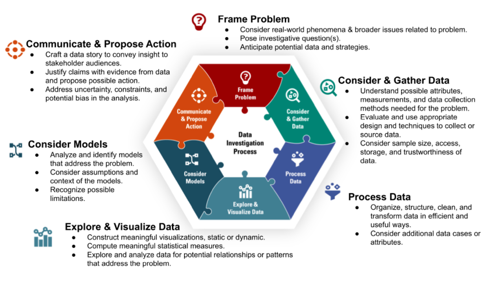

Data Bootcamp - Introduction
RStudio File Types
- Before we move on to data science programming, let’s briefly discuss RStudio file types, with a focus on
quartodocuments. …
📊 Task 1.2
- Take two minutes to complete the following:
- go to
File->New File->Quarto Document - select
Create- an untitled quarto document with default content should appear in your editor window.
- read the default information
- click the green “play” buttons and observe what happens
- Based on what you read, what can you do in a quarto document?
[Your answer goes here]
Let’s return to our untitled example doc and discuss a few other features.
Now let’s discuss a few big picture concepts…
Data Science Workflows
- What comes to mind when you consider what a data science workflow might entail?
💬 Please discuss with two others nearby.
- Here is an example of a data science workflow, from Lee et al. (2022):

What do you notice about the data science process presented here? How does it align with your experience and/or thoughts about a data science workflow?
Data science processes…
- Involve data
- May be iterative or cyclical
- May involve collaboration
- Should be reproducible and well documented
Workshop project
In this workshop, you will produce a project with the following components:
- A data dictionary & data summaries
- why you chose your dataset, what is relevant (to you or others) about the dataset and/or what interests you about the dataset
- the data source, data description, dimensions, variables (ranges, levels, units), potential use cases, and other important information about the data that would be helpful for yourself and others
- Specification of a data investigation/research question
- hypotheses and/or what you expect to find
- Trends or models, and visualizations
- related to the data investigation of interest
- assumptions, limitations
- Contextual Interpretations
- contextual presentation of results & interpretations
- what’s missing from the data and/or what you would add
- next steps
- What you’ll take forward from this experience and/or what else you’d like to know.
Tracking your process/data science workflow throughout, with the following key concepts in mind.
Reproducibility
Can you reproduce the results of a given data investigation? Furthermore, can you provide someone else with a roadmap for reproducing your process and results?
This is what we will do and in your project this will be a focus of our programming practices.
Additional project criteria: Make your process reproducibile via good programing practices, including code comments.
Code comments
Code comments are a great way to facilitate reproducibility, collaboration, organization, and understanding in the data investigations programming process.
NOTE: How you specify a comment may depend on the file type that you’re using, but RStudio has features to help you with this.
Task: Go to the “Code” in the task bar and scroll down to the “Comment/Uncomment Lines” option. In the space below, list the shortcut to comment or uncomment a line.
Regardless, we’ll focus on code comments that can be made in the same space as executable code.
Additional project criteria: Create informative and explanatory code comments throughout your coding process.